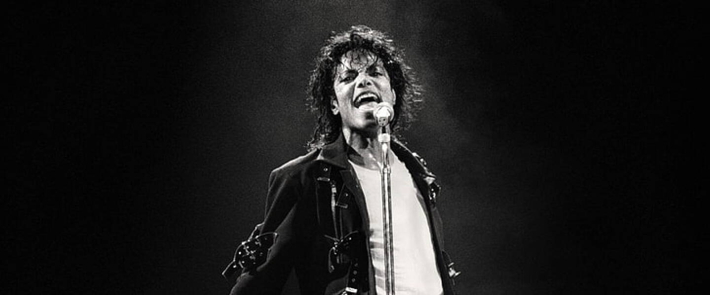

Biografía

Michael Joseph Jackson (Gary, Indiana, 29 de agosto de 1958 - Los Ángeles, 25 de junio de 2009) fue un cantante, compositor, bailarín y filántropo estadounidense. Conocido como el "Rey del Pop", sus contribuciones a la música, la danza y la moda lo convirtieron en una figura global durante más de cuatro décadas.
Comenzó su carrera a principios de los años 60 como miembro de los Jackson 5, donde destacó como vocalista principal. En 1979 inició su carrera en solitario con el álbum Off the Wall. En 1982 lanzó Thriller, considerado el álbum más vendido de todos los tiempos. Popularizó pasos como el Moonwalk y revolucionó el formato del video musical.
Discografía en solitario
| ÁLBUMES ESTUDIO PRINCIPALES | |||||||||||||||
|---|---|---|---|---|---|---|---|---|---|---|---|---|---|---|---|
|
Mejores Canciones
- 1. Thriller (1982) - El fenómeno musical y cinematográfico del pop.
- 2. Billie Jean (1982) - Línea de bajo dominante y debut del Moonwalk.
- 3. Beat It (1982) - Fusión de pop y hard rock con un solo de guitarra histórico.
- 4. Smooth Criminal (1987) - Relato misterioso con una coreografía inolvidable.
Registro al Club de Fans
Preguntas Frecuentes:
Thriller (1982) es el álbum más vendido de todos los tiempos a nivel mundial, rompiendo récords globales y consolidando a Michael Jackson como el Rey del Pop.
El cortometraje musical de "Thriller" se estrenó en diciembre de 1983. Con una duración cercana a los 14 minutos, revolucionó por completo la industria de los vídeos musicales.
Aunque brilló desde niño con los Jackson 5, su gran consagración como solista llegó con el álbum Off the Wall (1979) y su sencillo principal "Don't Stop 'Til You Get Enough".
Destaca por su atmósfera de cine negro inspirada en las novelas detectivescas. Además de su ritmo frenético, es mundialmente famosa por su innovadora coreografía y el truco de inclinación antigravedad.